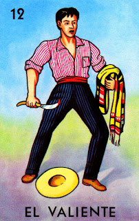

’Tate quieto, Valentín, no te vayas a pelear.

"The Valiente card in Lotería represents bravery, courage, and strength. Depicted as a fearless figure, this card symbolizes the spirit of standing strong in the face of adversity. In Mexican culture, the valiente is admired for their unwavering determination and their ability to confront challenges without hesitation, making this card a powerful symbol of inner strength."
Regresar